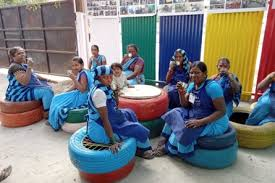
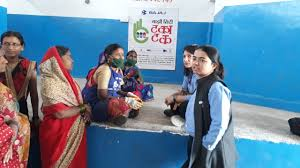
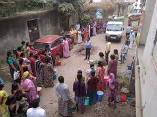

We focus on data driven and research based methodologies to focus on systemic overhaul of solid waste management processes of cities, towns and villages. We work with Urban Local Bodies and Gram Panchayats to optimize the use of existing resources to provide effective solid waste management services.
SearchOur cities towns and villages are reeling under the effects of climate change. A direct consequence of the lack of trees and green cover in human habitats, is the heat island effect, as well as a lack of recreational spaces for children, youth and the elderly. We build and deliver solutions to address this problem.
Our cities towns and villages are reeling under the effects of climate change. A direct consequence of the lack of trees and green cover in human habitats, is the heat island effect, as well as a lack of recreational spaces for children, youth and the elderly. We build and deliver solutions to address this problem.
We realize the importance water to support our green cover projects and to sustain green cover of any urban forest. However, since inception we have been focused on treating waste water or reusing water to support our projects. To be able to do so we have worked on Nala cleaning and setting up of Eco STP projects.
